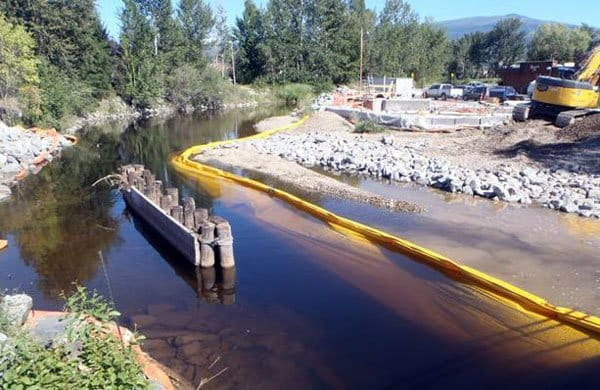
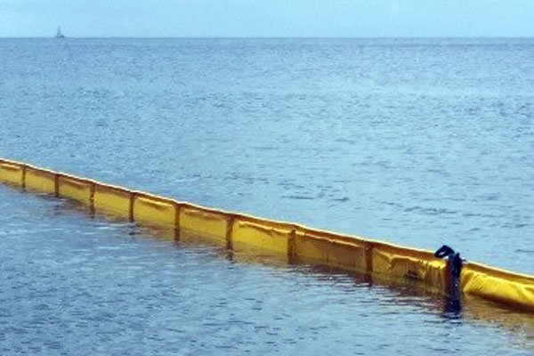
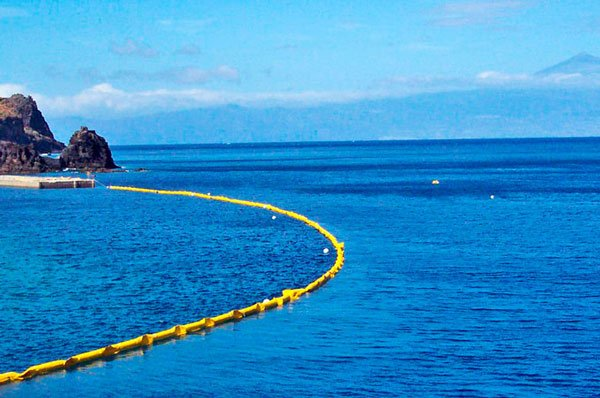

Solucionamos cualquier proyecto de barreras. Realizamos Trabajos a la Medida.
En las operaciones de dragado y trabajos de construcción se producen turbulencias y sedimentos en suspensión que afectan negativamente a la calidad del agua, contaminando de diferentes formas a los ecosistemas marinos y a las playas cercanas. En cuanto a la afectación humana en playas, una alta turbidez tiene una afectación estética importante, ya que a nadie le gusta el aspecto del agua sucia pero además, las partículas suspendidas facilitan la adhesión de metales pesados y muchos otros compuestos orgánicos tóxicos y pesticidas que pueden afectar muy negativamente la calidad de las aguas en zonas de baño.
Las partículas suspendidas en el agua absorben calor de la luz solar, calentando las aguas turbias y reduciendo la concentración de oxígeno. Por este motivo algunos organismos no pueden sobrevivir en aguas más calientes, mientras que se favorece la multiplicación incontrolada de otros. Las partículas bloquean la luz del sol, decreciendo la actividad foto sintética de plantas y algas que reducen la emisión de oxígeno. Como consecuencia morirán más fácilmente, contribuyendo a bajar aún más la concentración de oxígeno. Estas partículas son destructivas para muchos organismos acuáticos (macroinvertebrados) y afectan, pudiendo obstruir, las branquias de los peces, además de interferir en su habilidad para encontrar alimentos al disminuir su visión.
Mallas Antiturbidez
Son una medida preventiva efectiva para evitar la dispersión de partículas de sedimentos, que afectan la calidad del agua durante mucho tiempo.
Son fabricadas con tejido de alta resistencia con alta capacidad de drenaje, disponible en profundidades de hasta 15 metros.
Fáciles de instalar y reponer, lo cual ahorra tiempo.
Son altamente visibles, delimitando eficazmente el área en la que se localizan.
Los distintos tipos de soluciones cubren todas las necesidades y requerimientos específicos de cada proyecto.

Existen diferentes tipos de mallas dependiendo de su aplicación:
Tipo 1 DOT “Light” Aplicación Ligera:
Para los estanques, pequeños lagos y aguas protegidas.
Tipo 2 Medium Duty:
Para los ríos, arroyos y grandes lagos.
Tipo 3 Heavy Duty:
Para las aguas abiertas.
Nuestros especialistas le ayudarán a seleccionar el tipo de malla adecuada, así como el diseño de la instalación óptima para su proyecto.

Las Mallas antiturbidez son la solución ideal para proyectos de:
- Dragado
- Construcción de puentes
- Eliminación y restauración de presas
- Proyectos de marina y del puerto (mamparos, pilares, muros de contención)
- Proyectos del puerto y terminales (escolleras, diques, rompe olas)
- Desembarques
- Cruces de tuberías
- Rehabilitación y restauración costeras y de litorales
